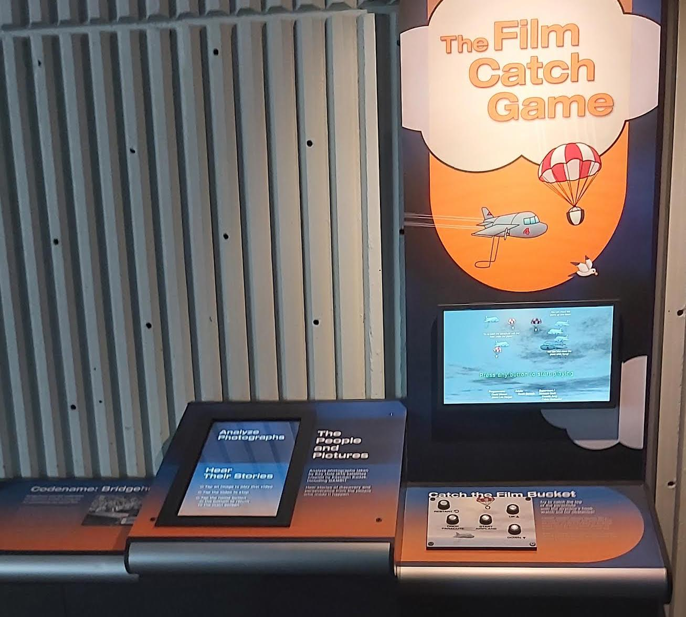
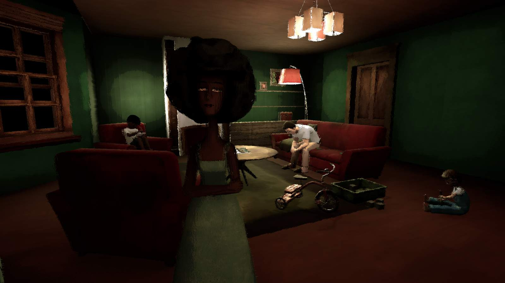
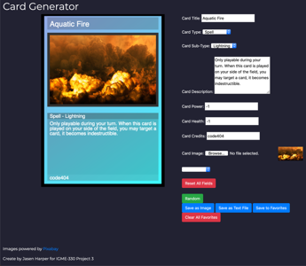

About
Game dev and designer, mostly working on personal projects while working towards an AS in Biology. Graduated in 2023 from Rochtester Institute of Technology with a Bachelor's in Game Design and Development.
RMSC Film Catch Game
Unity game made for the RMSC Strasenburgh Planetarium Gambit Satellite Exhibit.
Museum Exhibit PageChangeling by Xana Adhoc
A VR mystery game developed in Unreal. Developed introduction levels and helped to write the story. Implemented the story into the introduction levels.
Project PageThe Warlock's Pact
Short horror game loosely based off of The Dresden Files. Made with a small team for a Game Design course.
TCG Card Generator
Generator for creating simple and generic cards for idea generation for trading card games.
Project Page